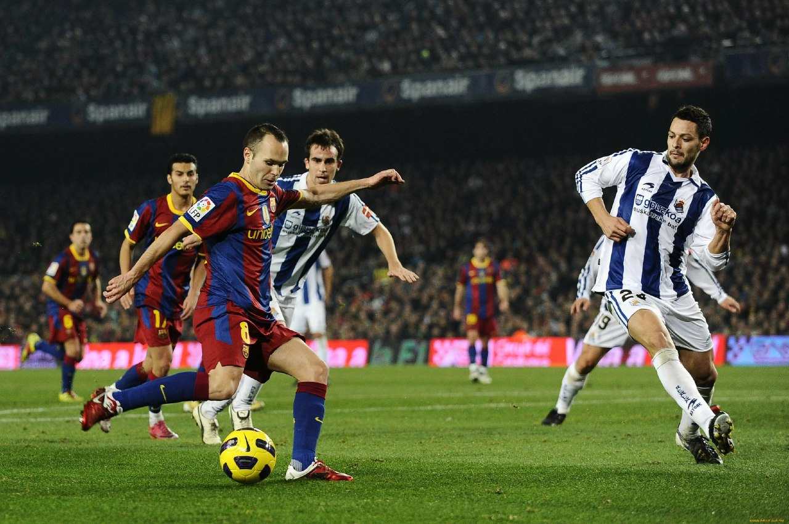
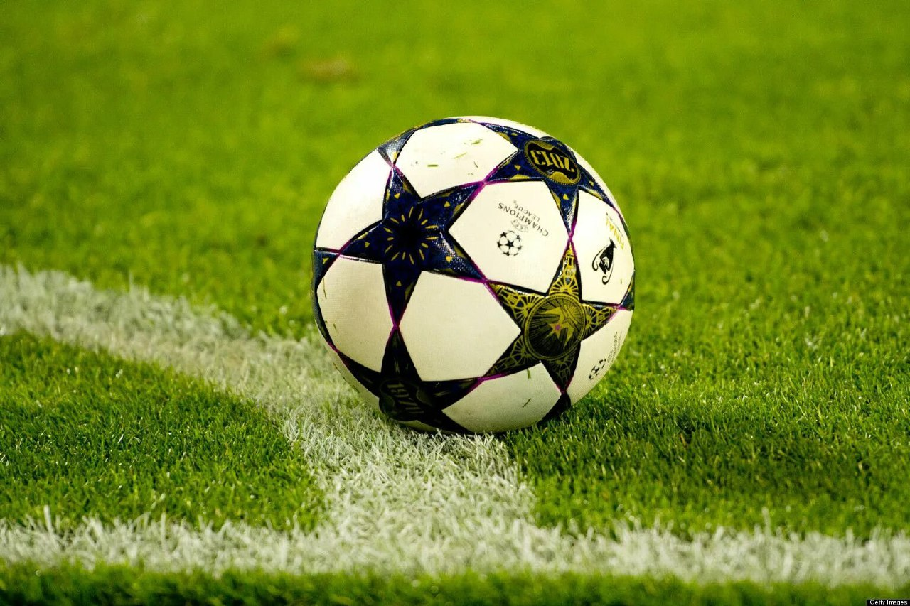
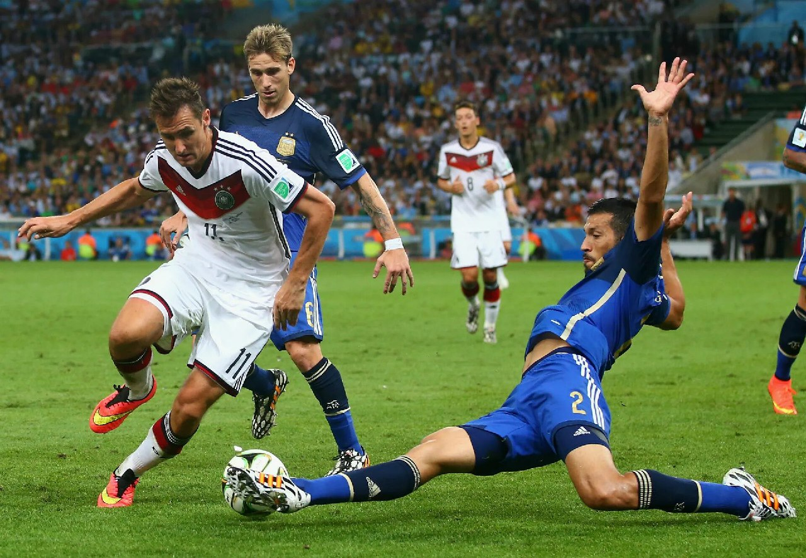

Футбол, который в некоторых странах называют соккером, — это всемирно любимый вид спорта, завоевавший сердца миллионов. Он требует умения, ловкости и командной работы.
Футбол требует умения, ловкости и командной работы.
Игра ведется между двумя командами по одиннадцать игроков в каждой, с целью забивания голов, путем попадания мяча в ворота противоположной команды.
